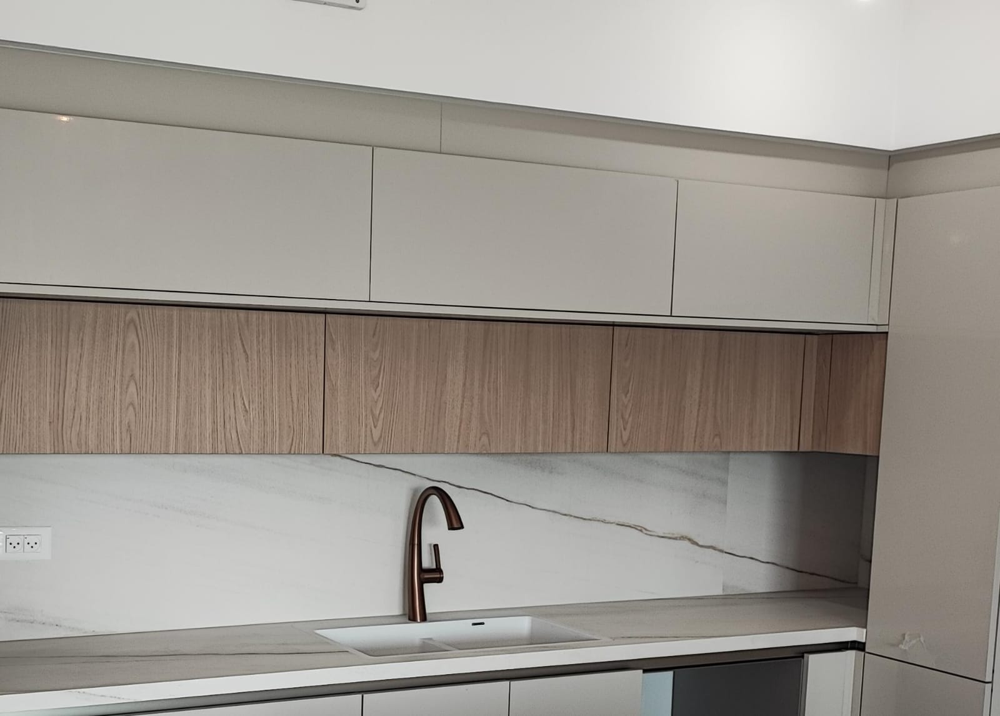
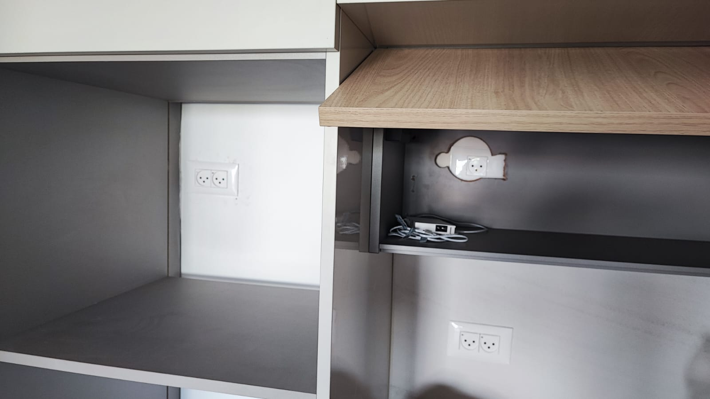
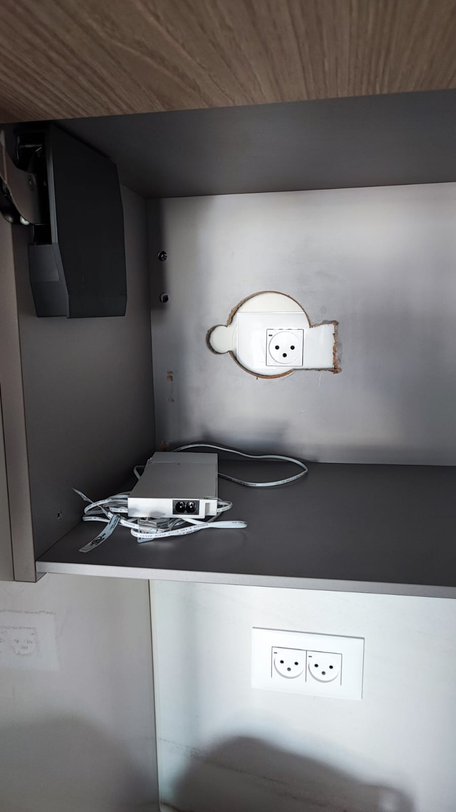
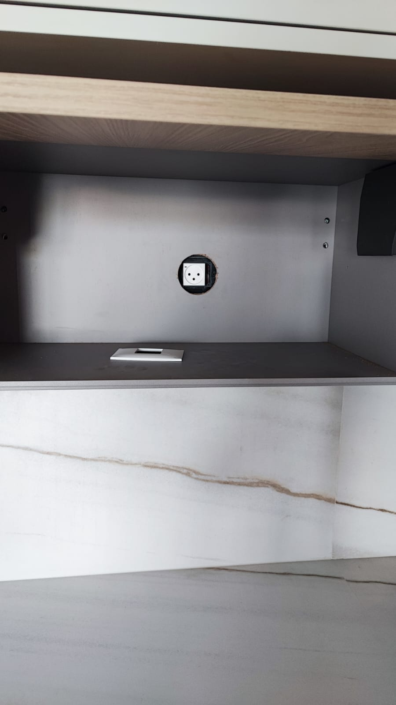
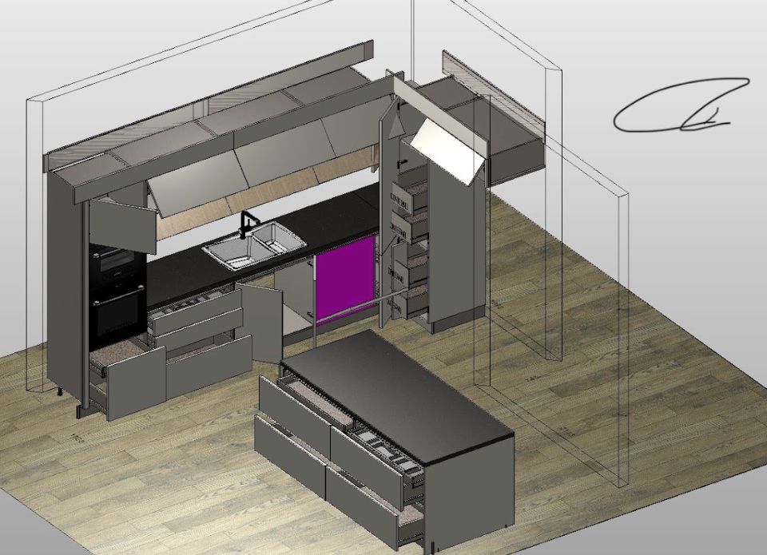
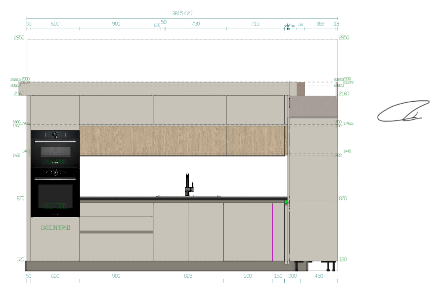
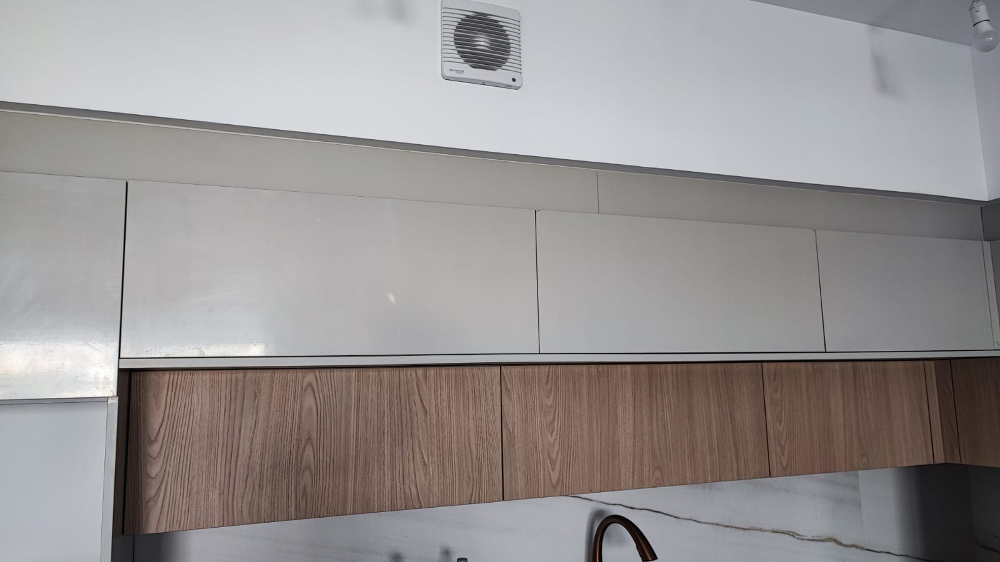
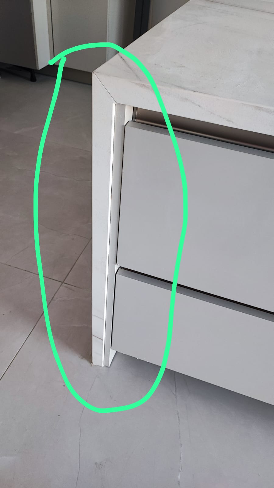
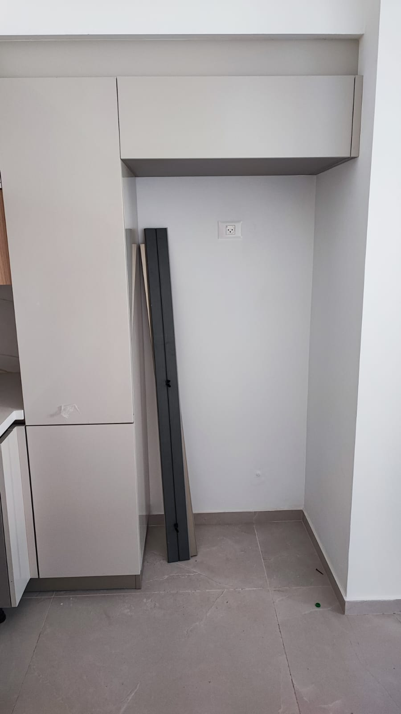
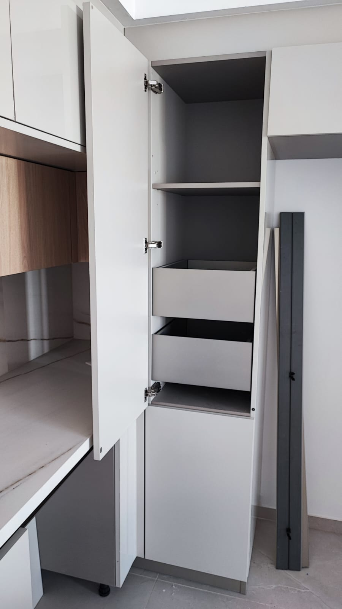

למרות שחתמנו על התוכנית בתמימות ובציפייה לשירות מקצועי, לא ציפינו לעוגמת הנפש ולחוסר המקצועיות בהם נתקלנו במהלך תכנון וביצוע המטבח עם מודי מטבחים...
המרחק בין השיש לארונות העליונים הוא כ-50 ס"מ. אני, בגובה 1.77 מטר, נתקל שוב ושוב בארונות הכי עליונים כשאני מנסה להשתמש בכיור. זה פשוט בלתי נסבל. האם כך אני אמור לבלות את שאר חיי במטבח הזה? הבאנו נגרים שבחנו את הבעיה ונדהמו לראות איך חברה שמכבדת את עצמה יכולה לבצע התקנה בגובה כזה. במילה אחת - חוסר מקצועיות.
שילמנו תוספת עבור תאורה מתחת לארונות העליונים, כנהוג היום. לצערנו, המעצבות ממודי עשו טעות בסיסית: במקום שקע לתאורה, התבקשנו להוסיף ולשלם על שני שקעי שירות דרך הקבלן בתוך הארונות! זה היה צריך להיות ברור מאליו, אבל אפילו כשהתקינו שקעי שירות, היה צורך רק באחד ולא בשניים, וההתקנה עצמה התבצעה בצורה רשלנית, עם חיתוכים לא מקצועיים (ראו תמונות). ואם לא די בכך, בתיקוני מטבח שהם הגישו לקבלן, הם דרשו להוסיף מתג לתאורה – למרות שמתברר שהתאורה בכלל אמורה לעבוד על חיישן. בנוסף, מעולם לא נאמר לנו על הקופסא הזאת של התאורה שאתם רואים בתמונה שאיתה אנחנו צריכים להתמודד גם. חוסר מקצועיות מוחלט.
  למרות שביקשנו וחזרנו על כך מספר פעמים, לא התקינו לנו קו אפס בסגירה העליונה. בנוסף, הוחלט על דעת עצמם לבצע התקנה מדורגת והפאנלים לא מיושרים עם קו הארונות שמתחתיהם. חוסר מקצועיות.
ראו מה השלו אותנו ומה קיבלנו בפועל:
  אני ואשתי ישבנו עם המעצבת ממודי מטבחים והבהרנו באופן חד-משמעי שהשיש יכלול את כל המטבח, כולל האי והדפנות. למרות זאת, קיבלנו דפנות מעץ שעליהן הולבש השיש. כאשר הגיעו למדוד את השיש, התקשרו אלי להבהיר מדוע הדפנות נותרו מעץ. כשפניתי לאחראי, תשובתו הייתה שזה בסדר. לאחר זמן מה, הבנתי את הטעות האיומה ובשיחת טלפון נוספת איתו, הוא הכחיש כל דיבור בנושא. חוסר מקצועיות משווע.
בתוכנית המוגשת, הנישה למקרר היא 89 ס"מ – מידה לא סטנדרטית. בחיפושנו אחר מקרר מתאים, נאמר לנו בכל החנויות שהנישה הסטנדרטית למקררים היא בין 91 ל-95 ס"מ. אף אחד לא טרח להסביר לנו שהנישה שהוגדרה לא מתאימה למקרר רגיל, אחרת אין סיכוי שהיינו חותמים על כך.
למעצבות הבהרנו שאנחנו מעוניינים בשני תנורים – אחד לחלבי ואחד לבשרי. ההצעה שקיבלנו הייתה להתקין "תנור וחצי", אשר בפועל התגלה כמיקרוגל יותר מאשר תנור. נאלצנו להוציא עוד כ-3,000 שקלים כדי לקבל "חצי תנור" שיהיה למעשה תנור אמיתי. מעולם לא קיבלנו הצעה פשוטה לשני תנורים רגילים. חוסר מקצועיות מובהק ועוגמת נפש.
פתיחת המזווה תוכננה כך שתתבצע בכיוון ההפוך, מה שיוצר אי נוחות מכיון שכל הזמן צריך לפתוח אותו בצורה מדויקת בשביל שהמגירות יפתחו. בנוסף יש חשש מתמיד שהדופן תפגע בשיש ותהרס.
לאחר שהבעיה הגיעה לידיה של המנהלת, היא אמרה במפורש: "אנחנו עושים לכם טובה שאנחנו בכלל מנסים לטפל לכם בדברים." בהצעתה ה"נדיבה" הוצעו לנו שני פתרונות: הראשון, להגביה את הארונות – מה שיגרום לנו לשלם עבור חיפוי שיש חדש באלפי שקלים, כתוצאה מבעיה שהם יצרו. השני, להגדיל את נישת המקרר ל-91 ס"מ, אך על חשבון המזווה, שזה אחד הפריטים החשובים ביותר במטבח. התנהלות זו משקפת שירות נוראי ואי לקיחת אחריות מלאה על כל הליקויים והעוגמת נפש הרבה שחווינו לאורך התהליך.
חשוב לציין ששתיים מהמעצבות שהיו מעורבות בפרויקט עזבו או פוטרו מהחברה. בנוסף, חשוב להדגיש שגם המנהלת הנוכחית, הודתה בפנינו שהיו ליקויים בתכנון ובביצוע, ושכתוצאה מכך הוחלפו צוותים. היא אף הודתה שהכירה את המעצבת ממקום עבודה קודם, וידעה שהיא לא מקצועית מספיק, ובכל זאת בחרו לשלב אותה בפרויקט שלנו. גם המנהל שעבד מולנו עזב את החברה, מה שמדגיש עוד יותר את חוסר היציבות והמקצועיות שחווינו בתהליך.
זוג צעיר עם שני ילדים קטנים, שכל מה שרצה זה להיכנס לדירה החדשה שלו אחרי החגים בכיף ובשמחה, נאלץ כעת לבזבז את זמנו בחיפושים אחר חברת מטבחים אחרת – חברה שנוכל לבטוח בה. לצערנו, נאלץ להוציא שוב עשרות אלפי שקלים נוספים לאחר כל עוגמת הנפש שחווינו לאורך התהליך הזה. אנחנו רק מקווים שגם אתם תדעו לבחור את חברת המטבחים שלכם בקפידה, לבדוק היטב את כל התכנון והביצוע, ולוודא שכל התהליך מתנהל כראוי – כדי שלכם לא תקרה חוויה כזו, ותוכלו ליהנות מהמטבח שלכם בלי מפחי נפש.
כל המציל אישה ממטבח כזה כאילו הציל עולם ומלואו
לוידוא כל הפרטים אפשר להתקשר לנטלי ונתנאל:
0507198894 / 0547277235